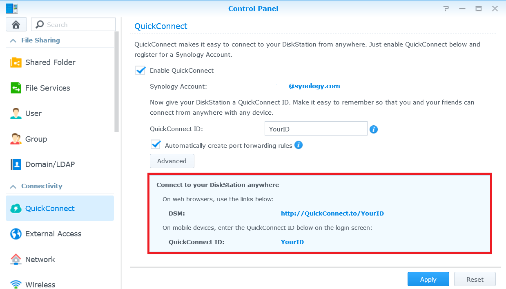

Access your Synology NAS over the Internet and share files

Overview
With QuickConnect, you can easily connect to your Synology NAS over the Internet without the hassle of setting up port forwarding rules or other complicated network settings. QuickConnect allows you to connect via a simple customizable address like Quickconnect.to/example.
1. Set up QuickConnect
- Go to Control Panel > QuickConnect.
- Check the Enable QuickConnect box.

- If you do not have a Synology Account, click
Log in to or register a Synology Account. Enter the required information and click OK. If you already have a Synology Account, enter your account information.

- Create your own QuickConnect ID in the QuickConnect ID
field. Then click Apply.

- Your QuickConnect link information will appear. Use these links to access your Synology NAS. In this example, the address for DSM is
http://Quickconnect.to/YourID.

- If you do not see the QuickConnect DSM link, click Advanced
and make sure DSM is enabled.

- You can now use the QuickConnect DSM link to access your Synology NAS!

2. Share files on your NAS using QuickConnect
With QuickConnect enabled, you can easily share files stored on your Synology
NAS to anyone without worrying about port forwarding.
- First enable HTTPS connection to safely share your files. Go to Control Panel > Network.
- Check the Enable HTTPS connection box and click
Apply.

- Then enable file sharing for QuickConnect. Go to Control Panel > QuickConnect.
- Click on Advanced and make sure the box of File
Sharing is checked.

Note:
When configuring advanced QuickConnect settings, we recommend that you log in to DSM using the local IP address or domain name of your Synology NAS.
- You are ready to start sharing files using QuickConnect. Open File Station and right-click the file or folder that you want to share. Then click
Share file links from the context menu.

- A file sharing link is generated. Simply share this link with family and friends to download the shared folder/file.